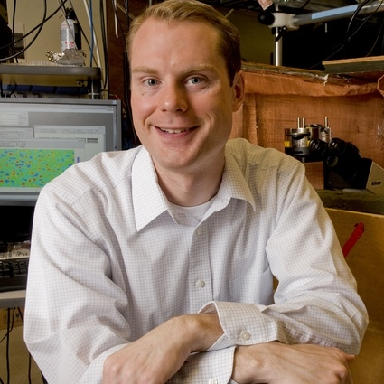
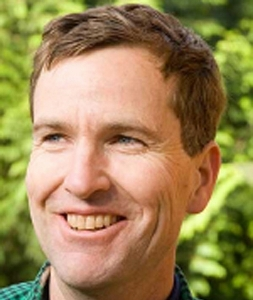
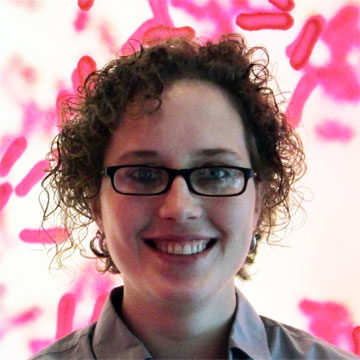
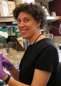
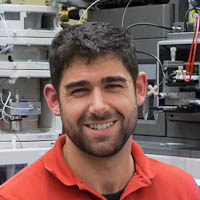
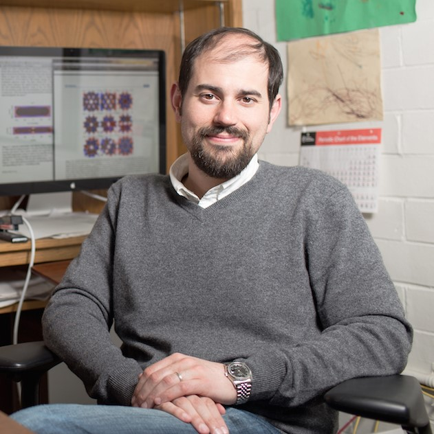
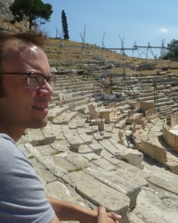

Freshman Year Classes
Summer Quarter 2014
- AMATH 351 - Introduction to Differential Equations and Applications - Lowell

Lowell Thompson
- AMATH 352 - Applied Linear Algebra and Numerical Analysis - Felix
Xiofeng Ye
Spring Quarter 2014
- BIOL 180 - Introduction to Biology - Naish, Meister

Kerry-Ann Naish, Meister - TA: Laura
Laura Nelson
- CHEM 165 - Honors General Chemistry - Mayer
James Mayer - TA: Zuzana
- CLAS 101 - Latin and Greek in Current Use - Adrian Packel

Adrian Packel
- ENGL 199 - Interdisciplinary Writing for Natural Science (Biology) - Vincent Oliveri

Vincent Oliveri
Winter Quarter 2014
- BIOEN 290 - Bioengineering: Guided Independent Studies - Pollack
Gerald Pollack
- CHEM 155 - Honors General Chemistry - Ginger
David Ginger - TA: Philip Cox
Phil Cox
- MATH 126 - Calculus with Analytic Geometry III - Bekyel
Ebru Bekyel - TA: Libo Zeng

Libo Zeng
Autumn Quarter 2013
- ARCH 150 - Appreciation of Architecture I - Merlino

Kathryn Merlino
- BIOEN 215 - Bioengineering Problem Solving - Taylor
Alyssa Taylor
- BIOEN 299 - Introduction to Bioengineering - Pollack
Gerald Pollack
- CHEM 145 - Honors General Chemistry - Reinhardt

Bill Reinhardt - TA: Brice Jurban

Brice Jurban
- MATH 125 - Calculus with Analytic Geometry II - Novik

Isabella Novik - TA: Lowell Thompson
Lowell Thompson
Early Fall Start (EFS) 2013
- GEN ST 162 - Sustainable Energy Solutions for the 21st Century: Science, Technology, and Policy - Arabshahi
Payman Arabshahi
Sophomore Year Classes
Summer Quarter 2015
- CHEM 241 - Organic Chemistry Lab - Goldman

Lawrence Goldman - TA: Mary
Mary Nguyen
Spring Quarter 2015
- AMATH 353 - Partial Differential Equations and Waves - Kotas

Jakob Kotas
- CHEM 239 - Organic Chemistry - Zalatan

Jesse Zalatan
- CHEM 241 - Organic Chemistry Lab - Goldman
Lawrence Goldman - TA: Peter
Peter Johnston
- HSTAM 365 - Medieval England, 1042-1485 - Urbanski
Charity Urbanski
Winter Quarter 2015
- BIOL 200 - Introduction to Biology - Freeman
Scott Freeman - TA: Christine
Christine Lloyd
- CHEM 238 - Organic Chemistry - Maly
Dustin Maly- TA: ChloeChloe Lombard
- PHIL 100 - Introduction to Philosophy - Marshall
Colin Marshall- TA: Joey

Joseph Miller
Autumn Quarter 2014
- AMATH 301 - Beginning Scientific Computing - Vogl
Christopher Vogl
- CHEM 237 - Organic Chemistry - Bryant

Jasmine Bryant - TA: Marty

Martin Roskoff
- CSE 142 - Computer Programming I - Reges

Stuart Reges - TA: Jake

Jake Utley
- PHYS 121 - Mechanics - Pedigo

Robert Pedigo
Junior Year Classes
Summer Quarter 2016
- P BIO 499 - Undergraduate Research (Gordon Lab - Physiology and Biophysics) - Sharona Gordon
Sharona Gordon
Spring Quarter 2016
- BIOC 442 - Biochemistry III - Kimelman

David Kimelman, Ruohola-Baker
Hannele Ruohola-Baker - TA: GabeGabe Manske
- CHEM 428 - Bioinstrumental Analysis - Matt Bush
Matt Bush
- HSTAM 333 - Late Middle Ages - Urbanski
Charity Urbanski
- P BIO 499 - Undergraduate Research (Gordon Lab - Physiology and Biophysics) - Sharona Gordon
Sharona Gordon
Winter Quarter 2016
- BIOC 441 - Biochemistry II - Miller
Dana Miller, Hoppins
Suzanne Hoppins - TA: KatieKatie Baker
- CHEM 317 - Inorganic Chemistry Lab - Jasmine Bryant
Jasmine Bryant
- HSTEU 290 - Catholicism in Europe from 1900 to Present - Felak

James Felak
- PSYCH 101 - Introduction to Psychology - Ann Voorhies

Ann Voorhies
Autumn Quarter 2015
- ART H 290 - History of Architecture - Meredith Clausen
Meredith Clausen
- BIOC 440 - Biochemistry I - Klevit
Rachel Klevit, Kollman

Justin Kollman, Brockerhoff

Susan Brockerhoff - TA: Martin

Martin Kinisu
- CHEM 321 - Quantitative Analysis - Bush
Matthew Bush - TA: Sam
Samuel Marionni
Senior Year Classes
Spring Quarter 2017
- CHEM 457 - Physical Chemistry III - Masiello
David Masiello
- CHEM 461 - Physical Chemistry Lab - Robinson

Bruce Robinson
- LATIN 103 - Introductory Latin III - Connors
Catherine Connors
- P BIO 499 - Undergraduate Research (Gordon Lab - Physiology and Biophysics) - Sharona Gordon
Sharona Gordon
Winter Quarter 2017
- CHEM 426 - Instrumental Analysis - Zhang
Bo Zhang
- CHEM 456 - Physical Chemistry II - Khalil
Munira Khalil
- CHEM 463 - Spectroscopic Techniques for Structural Identification (Lab) - Sasaki

Tomikazu Sasaki
- LATIN 300 - Introductory Latin I, Accelerated - Carver
Charles Carver
- P BIO 499 - Undergraduate Research (Gordon Lab - Physiology and Biophysics) - Sharona Gordon
Sharona Gordon
Autumn Quarter 2016
- CHEM 416 - Transition Metals - Kovacs
Julia Kovacs
- CHEM 455 - Physical Chemistry I - Maibaum

Lutz Maibaum
- CHEM 460 - Spectroscopic Molecular Identification - Sasaki
Tomikazu Sasaki
- GENOME 361 - Fundamentals of Genetics and Genomics - Cheong
Frances Cheong
- P BIO 499 - Undergraduate Research (Gordon Lab - Physiology and Biophysics) - Sharona Gordon
Sharona Gordon